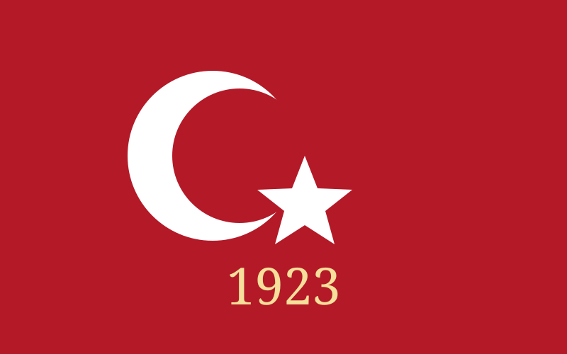
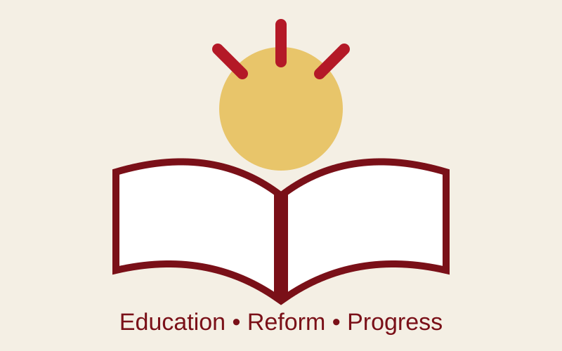
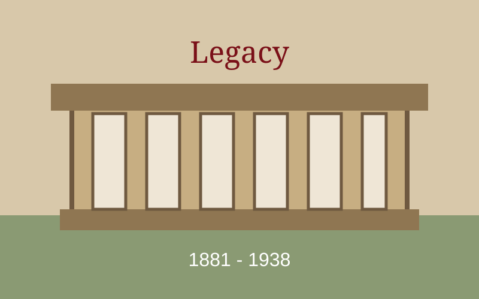

Founding the Republic
Atatürk led the national movement and became the first President of the Republic of Türkiye in 1923.
Open Modal Link IET710 - Assignment 7
A CSS modal-window project about the founder and first President of the Republic of Türkiye.
Click a button to open a modal window. Each card focuses on a different part of Atatürk's life and legacy.

Atatürk led the national movement and became the first President of the Republic of Türkiye in 1923.
Open Modal Link I
His reforms changed education, law, public life, and the alphabet as Türkiye built new institutions.
Open Modal Link II
Atatürk's ideas about national sovereignty, education, and modernization remain important in Türkiye.
Open Modal Link IIIModal Window One
On October 29, 1923, the Republic of Türkiye was proclaimed. Mustafa Kemal Atatürk became its first President.
This moment is a major part of his historical legacy and the beginning of a new political era for Türkiye.
Modal Window Two
Atatürk supported wide-ranging reforms in education, law, language, and civic life.
The Latin-based Turkish alphabet was introduced in 1928, and literacy and public education became major national priorities.
Extra Product Block
Mustafa Kemal Atatürk lived from 1881 to 1938. His leadership helped shape the institutions of modern Türkiye.
Anıtkabir in Ankara is his mausoleum and an important national memorial.